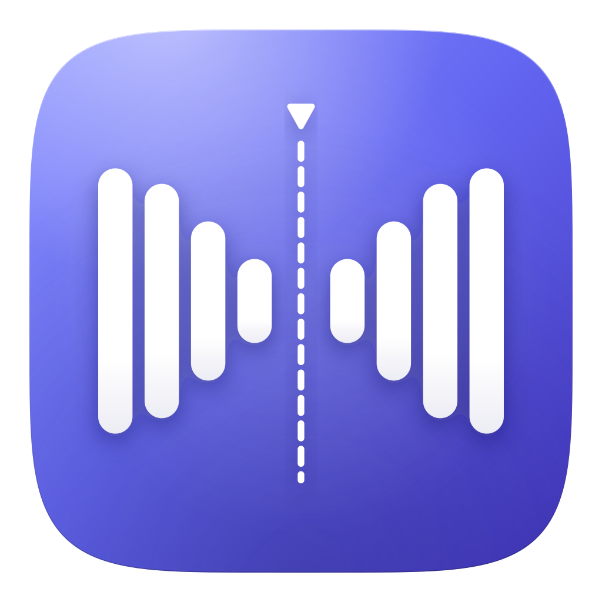

Automatic video silence cutter. Detects the quiet gaps, keeps the good parts.
Press ⌘ + Space, type Terminal, hit Enter.
curl -fsSL https://raw.githubusercontent.com/muzafferkadir/klyppr-desktop/main/install.sh | bash
Installs Klyppr.app to Applications (Apple Silicon & Intel). Clears quarantine so it opens right away — no Gatekeeper prompt.
Prefer Homebrew? brew install --cask muzafferkadir/tap/klyppr · or download the .dmg
Press ⊞ Win, type PowerShell, hit Enter.
irm https://raw.githubusercontent.com/muzafferkadir/klyppr-desktop/main/install.ps1 | iex
Downloads and runs the latest signed installer. Launch Klyppr from the Start menu.
Or download the .exe manually.
FFmpeg is downloaded by the app on first launch — nothing else to set up.
GitHub · MIT License · by Muzaffer Kadir Yılmaz